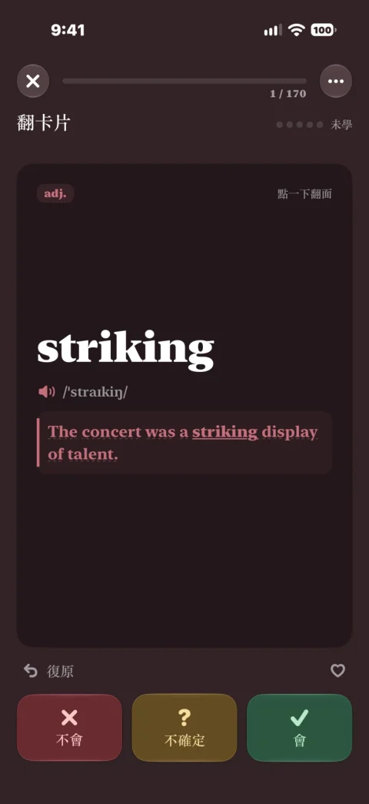
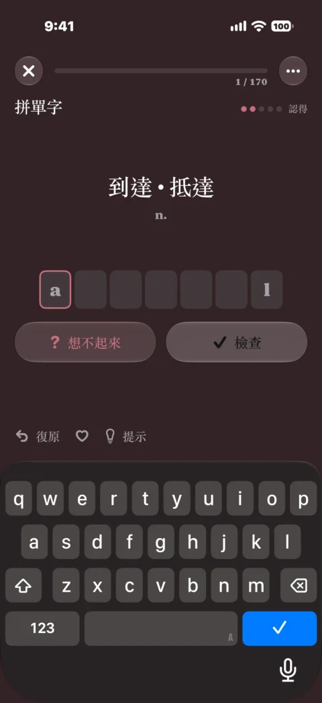

Android 也能同步
用同一個 Email 登入，iPhone 和 Android 的單字和進度會合併，不會互相刪除。


打開就知道今天要背哪些字。內建 10,492 個單字和 10,410 句例句，從國中小到托福。
複習以天為單位到期。答對的字隔久一點再來，答錯的字很快回來。
支援裝置iPhone、Android
音標、例句和翻譯都在這裡，可以聽整句例句。

支援裝置iPhone、Android
左右滑單字卡，點兩下收進我的單字。

支援裝置iPhone、Android
記下每天的練習、熟練階梯和勳章。
支援裝置iPhone、Android
內建字庫和自己的清單都能直接練。

支援裝置iPhone、Android
翻卡片和英翻中，想不起來可以按不知道。

支援裝置iPhone、Android
中翻英和克漏字，從例句的空格選回那個字。

支援裝置iPhone、Android
拼單字有提示，英式和美式拼法都算對。

支援裝置iPhone、Android
聽音選中文或英文，可以放慢再聽一次。
慢速
再聽
支援裝置iPhone、Android
輸入英文或中文，找到就能收進來。
支援裝置iPhone、Android
把記事本或聊天裡的單字清單貼進來。
支援裝置iPhone、Android
支援 txt、csv 和捲字清單。
支援裝置iPhone、Android
拍下課本，或從相簿匯入。
支援裝置iPhone
輸入同學的 8 碼分享代碼。
支援裝置iPhone
字典沒有的字會自動翻成繁體中文。
支援裝置iPhone
基礎 2000、進階 4000、學測 6000+，分成 1 到 6 級。共 6,064 字。
支援裝置iPhone、Android
教育部國中小基本字彙。共 1,206 字。
支援裝置iPhone、Android
TOEIC Service List。共 1,242 字。
支援裝置iPhone、Android
雅思考試常見字。共 4,770 字。
支援裝置iPhone、Android
托福考試常見字。共 6,781 字。
支援裝置iPhone、Android
顏色：鳳凰紅
背景
字體
App 的外觀可以選跟隨系統、淺色或深色。
0.1.0 是目前的測試版，還沒有上架 App Store 和 Google Play。
到 GitHub 的 Releases 下載。iPhone 用 IPA，Android 用 APK。
需要 iOS 26。打開開發者模式，用 Sideloadly 或 AltStore 以自己的 Apple ID 簽名，再到 VPN 與裝置管理信任。免費帳號每 7 天要重簽一次。
打開 APK，依畫面提示允許安裝未知來源的 App。
可以。用同一個 Email 登入，兩邊的單字和進度會合併，不會互相刪除。
目前沒有拍照掃描、分享代碼、AI 翻譯、「換一句」、Siri 捷徑和圓體字型。
可以，但每 7 天要重簽一次，資料不會消失。
預設只存在手機。用 Email 登入後會備份到雲端，每個人只能讀寫自己的資料。
iPhone 版可以填 OpenAI 相容的 API。沒有 key 時用手機上的 Apple Intelligence，關閉時用 Apple 翻譯。